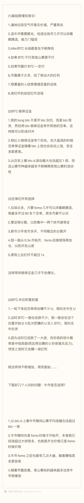

#1 · 未署名 ·
规则
难的不是知道和定目标 而是做到
个人准则
努力做到ing，不怕亏钱的看
- 翻倍出本
- 每个币保证金不超过100u,杠杆不超过十倍
- 杠杆超过5倍就是找死
- 只做btc，eth，ada【其他币已经亏惨了】
- 数据发布前特别注意 ，设置止损或者突破交易【CPI，PPI，失业人数，非农等】
- 以后市值100亿以下的不追高
经验分享
- 爆仓图 APP：CoinGlass
- 会议数据 APP：金十数据
- 美股数据 APP：富途牛牛
感悟
- 犯错不可耻，没有人会永不犯错，如果有人向你宣传他自己永不犯错，那么他已经在磨刀准备割你这个小韭菜了
- 盯盘时间越长，亏的越多
- 操作越多，亏的越多
- 赚钱大多靠运气，亏钱大多靠实力
一些思路
